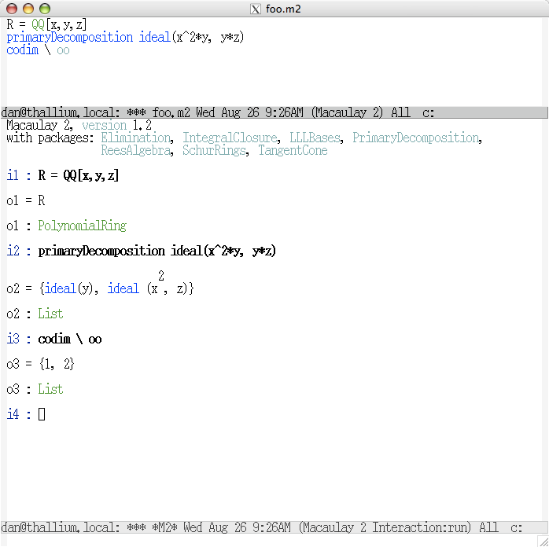

The screenshot below shows a user entering Macaulay 2 commands into a file whose contents are displayed in the upper emacs buffer, sending each line, when ready, to Macaulay 2 in the lower buffer, with a single keystroke. Ensure that the name of the file is of the form *.m2, split the screen into two panels with C-x 2, position the cursor on a line of text to send and press the function key f11. Use C-x o to switch to the other panel when needed.
